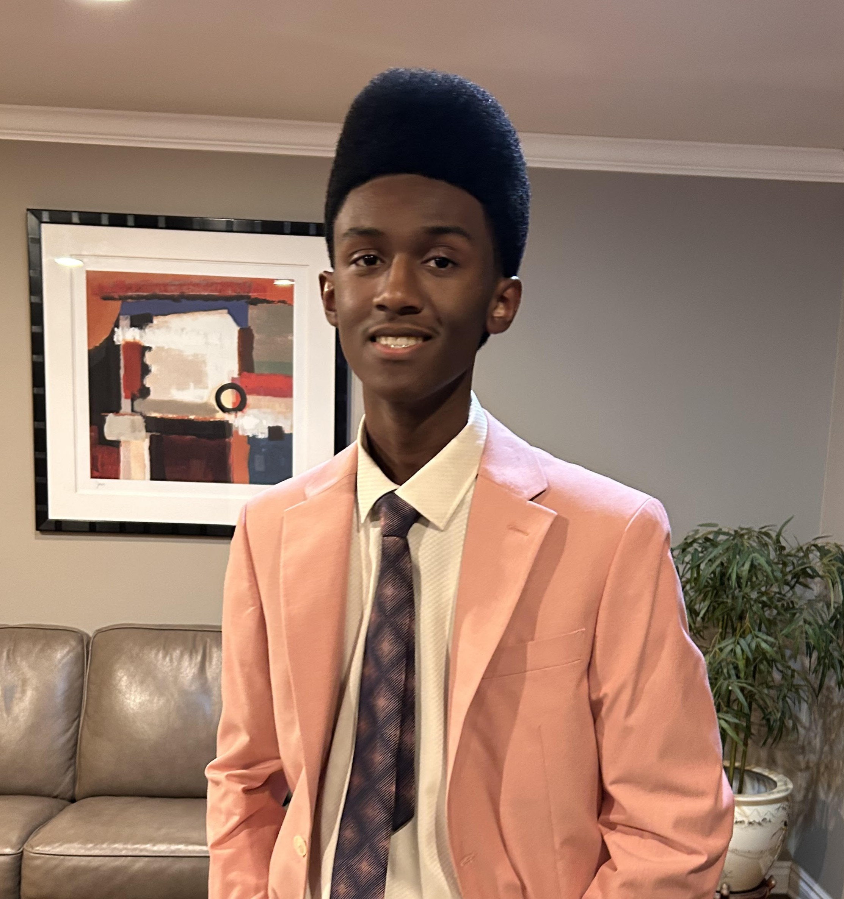

A wise man once said that "Every age has its storytelling form, and video gaming is a huge part of our culture". My career goal is to become a video game programmer. Video games have played a big role in my life. Some of my best memories were made with video games and it is something I am very passionate about. Video games have truly impacted my life and I would like to help create those experiences for others as well. The creative design that also goes into video games is also intriguing as well. There is so much that goes into them and every detail is meticulously placed; and I love that. I would enjoy working as a video game programmer because not only do I enjoy video games, I also thoroughly enjoy problem solving. When I am faced with an obstacle, I will not stop till I find an answer. As a video game programmer, I hope to have a comfortable and enjoyable lifestyle. I can have a flexible or rigid schedule depending on the company I work for. The video game industry is only getting bigger, which could help make it easier to get a job. With a salary of $60,000 to $150,000 I hope to afford basic necessities, own a home, vacation often, and have money for hobbies. To prepare myself to be a video game programmer, I will need to start building my game portfolio by working on personal game projects or demos. At high school I can take online math or physics classes to better my understanding of game engines and how to develop more complicated code. After high school I plan to go to Oakland Community College in order to get my general education credits and transfer those to a four year university. I don’t know what university I will transfer my credits to, however I do plan to study video game programming there. For possible certifications I want to try to get a bachelors game design to give me opportunities to work at triple A’s studios . The cost of a four year university ranges from In-state $119,640 to $247,960, however I plan to finance this through scholarships and student loans. To be a video game programmer, I will need to develop good communication, collaboration, and personal management skills. To explore more of my career, I plan to focus on making my own games and to participate in game jams in order to teach myself fundamental skills of video game design. This will allow me to put things I have made in my portfolio, setting me apart from other candidates. Although there may be moments where I am unmotivated, playing video games will help remind me of how video games have changed my life and how by making games, I too can change the lives of others. Overall, I am excited to pursue my passion of video games through video game programming.